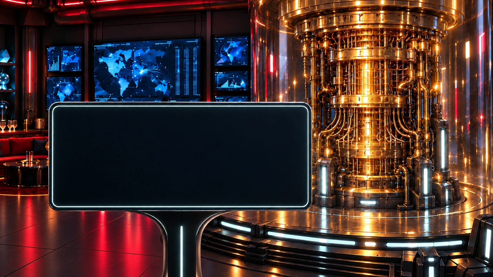
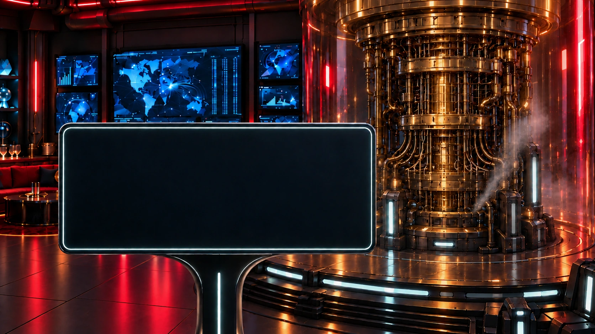
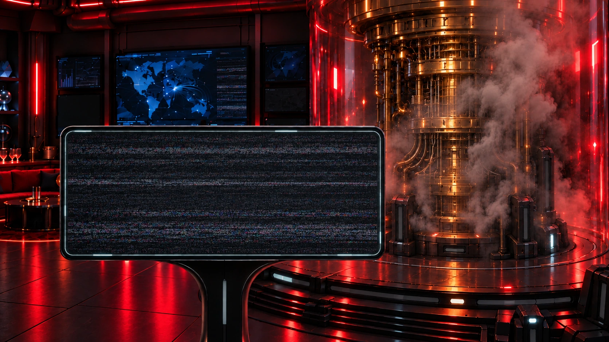
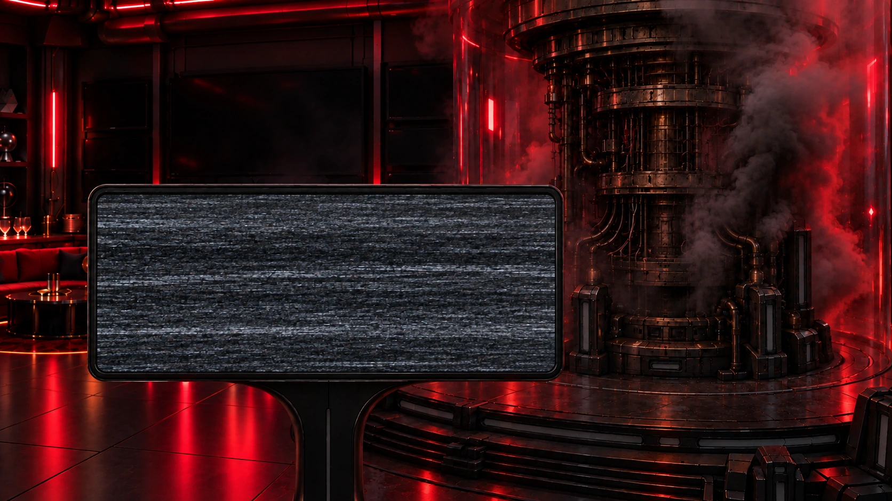

Operation Nullpunkt
Drohnenkamera
PICO / Kommandozentrale




Die Drohne schwebt vor dem Wartungsterminal. Akku und Steuerverbindung bleiben sichtbar.
Operation Nullpunkt
PICO / Kommandozentrale




Die Drohne schwebt vor dem Wartungsterminal. Akku und Steuerverbindung bleiben sichtbar.